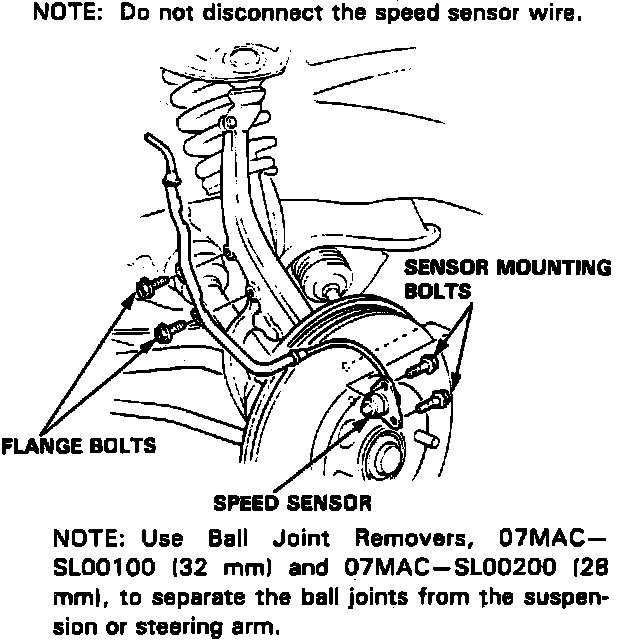
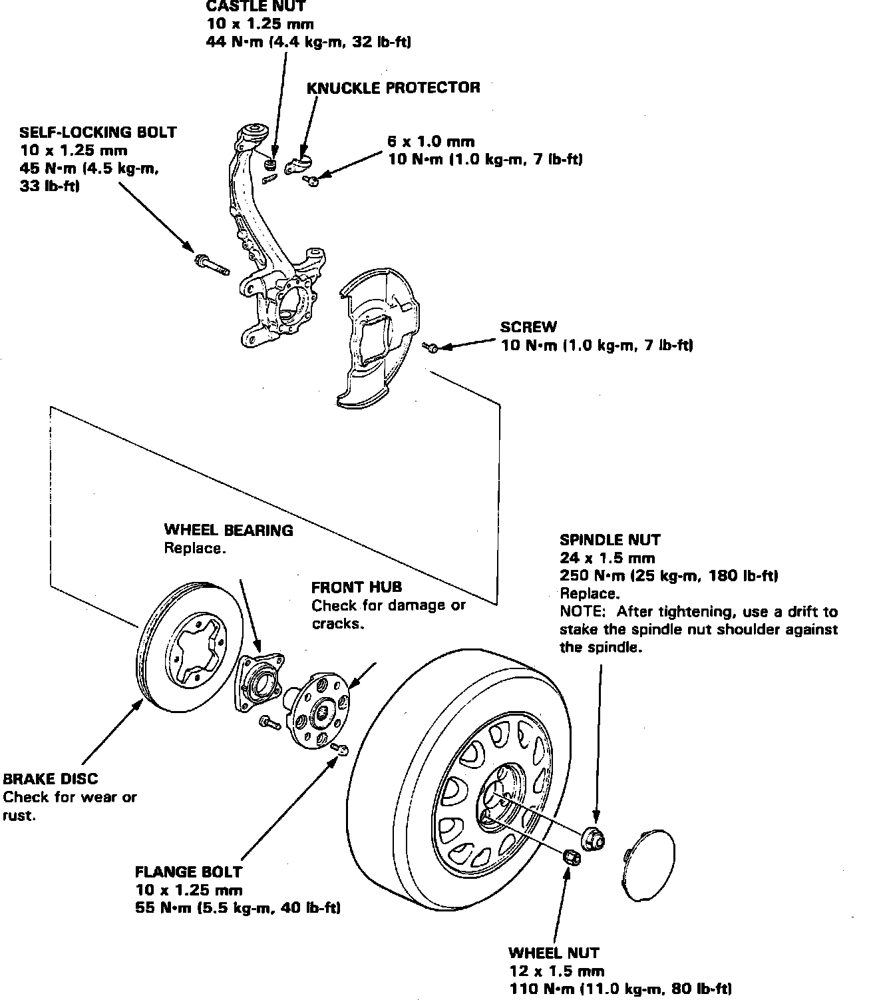

Front Steering Knuckle: Service and Repair
Fig. 19 ABS Sensor Removal:

Fig. 20 Steering Knuckle & Hub Assembly:

1. Lift spindle nut locking tab, then remove spindle nut.
2. Loosen wheel nuts, then raise and support front end of vehicle.
3. Remove front wheel assemblies.
4. Remove brake hose bracket attaching bolt.
5. Remove caliper attaching bolts, then using suitable wire hang caliper assembly aside.
6. Remove speed sensor wire bracket, then remove sensor from steering knuckle, Fig. 19. Do not disconnect speed sensor electrical connector.
7. Using ball joint removal tool Nos. 07MAC-SL00100 and 07MAC-SL00200 or equivalents, separate ball joints from suspension.
8. Remove steering arm cotter pin and nut.
9. Remove steering knuckle protector, Fig. 20.
10. Using ball joint removal tool Nos. 07MAC-SL00100 and 07MAC-SL00200 or equivalents, remove ball joints.
11. Pull steering knuckle outward, then using suitable plastic hammer remove driveshaft outboard joint from knuckle, then remove knuckle.
12. Reverse procedure to install.